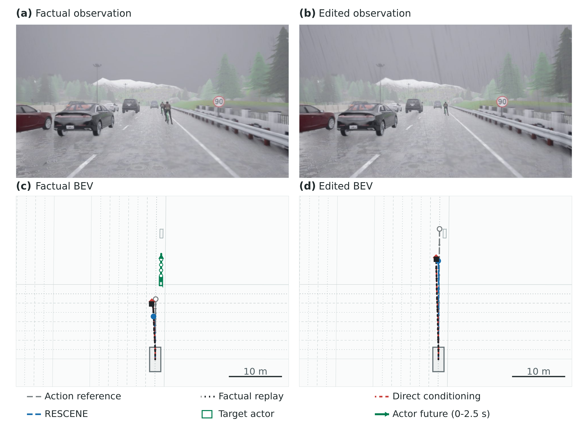
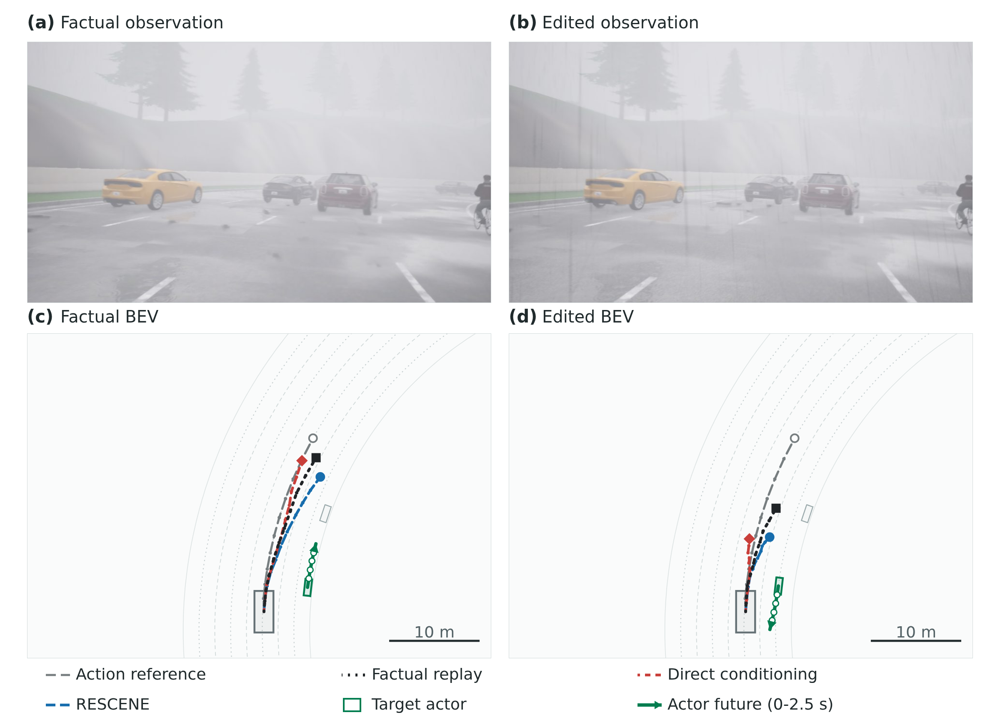

Keep factual driving
Unedited RGB supplies observed DINOv3 features for language and action supervision.
Visually Mediated VLA Alignment
through Latent Scene Editing
If a vehicle is removed from a scene, can a driving model describe and act in that changed world without reading the edit instruction at response time?
Read the abstractVision-language-action (VLA) models map visual observations and language requests to actions. For language-defined situations that are not directly observed, an appropriate action alone cannot distinguish visual grounding from an instruction-to-action shortcut.
RESCENE makes this distinction testable by constructing the specified scene in visual feature space. A latent editor masks affected camera-history evidence and predicts DINOv3 features from context, ego motion, and annotation-derived spatial hints. A separate response pass receives the constructed features, task, and navigation inputs, but not the edit condition or editor state. It generates language and then predicts route and trajectory; response gradients stop at the feature interface.
Factual reconstruction, frozen-reader semantic supervision, and an inverse feature cycle constrain construction without paired edited RGB. Joint learning preserves a direct observed-feature path for ordinary driving. On Bench2Drive220, RESCENE gains 6.41 driving-score points and 4.70 percentage points in route completion over factual replay, with a higher success rate. These results support a visually mediated formulation, while authored-world tests expose language and action trade-offs.
Method
The condition builds a latent scene; a fresh, condition-blind pass answers from it. Ordinary driving bypasses the editor and uses observed features directly.
Figure 1 separates ordinary driving from the authored alternative.
Ordinary driving bypasses the editor; task, ego motion, and navigation enter the shared response.
The response receives constructed features, ego motion, task, and navigation—but not the edit condition or editor state. The feature boundary stops response gradients.
Condition-exclusive comparisons hold task and navigation fixed.
Joint learning
Each view starts an independent response pass. The observed path is used for ordinary driving at inference.
Unedited RGB supplies observed DINOv3 features for language and action supervision.
Masked history predicts observed support features under a factual scene condition.
Authored edits use semantic and inverse-cycle constraints; no paired edited RGB is required.
Evidence
Closed-loop transfer on observed scenes and generated language–action behavior on paired authored worlds. Both show the full three-method comparison.
Bench2Drive220 · same 217 scored routes · fixed Driving request · observed visual path, no online editor
Takeaway. RESCENE gains 6.41 driving-score points and 4.70 percentage points in route completion over factual replay; direct conditioning has the highest success rate.
| Method | Driving score ↑ | Route completion ↑ | Success rate ↑ |
|---|---|---|---|
| Factual replay | 42.6885 | 62.5375% | 12.90% |
| Direct conditioning | 45.7248 | 61.5516% | 19.82% |
| RESCENE | 49.0961 | 67.2343% | 17.97% |
Context. RESCENE also gains 5.07 percentage points in success rate over factual replay. Three repeatably failed CARLA routes were excluded from the 220-route set for every method (Appendix B.6).
1,195 supported authored-world pairs from 30 validation routes · lower edited ADE is better
Takeaway. RESCENE leads edited-action error and both-action pass; direct conditioning leads paired QA and joint success.
| Method | Edited ADE ↓ | Both-action ↑ | Both-QA ↑ | Joint ↑ |
|---|---|---|---|---|
| Factual replay | 2.0389 m | 23.68% | 4.60% | 0.33% |
| Direct conditioning | 1.3489 m | 36.15% | 14.56% | 6.03% |
| RESCENE | 1.3144 m | 42.85% | 6.69% | 3.93% |
Context. Both-action means ADE ≤ 1 m in both worlds; both-QA means both generated count answers are correct; joint requires both. Table 9 uses the same protocol as Table 3. Direct conditioning receives explicit edit text/geometry and does not use RESCENE’s edited-feature semantic or cycle losses, so it is not loss-matched (Appendix Table 6).
| Method | Overtake | Merge | Emerg. brake | Give way | Signs | Mean |
|---|---|---|---|---|---|---|
| Factual replay | 6.67 | 11.69 | 20.00 | 30.00 | 6.45 | 14.96 |
| Direct conditioning | 13.33 | 19.48 | 28.33 | 20.00 | 9.68 | 18.16 |
| RESCENE | 17.78 | 16.88 | 23.33 | 30.00 | 11.29 | 19.86 |
RESCENE leads the mean, overtaking and signs, ties factual replay on give way, and trails direct conditioning on merging and emergency braking.
| Method | ADE (m) ↓ | FDE (m) ↓ |
|---|---|---|
| Factual replay | 0.9874 | 2.2272 |
| Direct conditioning | 0.9763 | 2.2140 |
| RESCENE | 1.0253 | 2.2688 |
RESCENE’s observed-path errors are slightly higher despite stronger closed-loop driving score and route completion.
| Editor training | Cosine ↑ | Relative L2 ↓ |
|---|---|---|
| Without regional losses | 0.7049 | 0.7073 |
| Without factual condition | 0.7769 | 0.6216 |
| Full reconstruction setup | 0.8023 | 0.5898 |
| Response input | ADE (m) ↓ | FDE (m) ↓ |
|---|---|---|
| Factual reconstruction | 2.3243 | 5.5767 |
| Edited reconstruction | 1.6135 | 3.9551 |
For latent substitution, response model, navigation, request, and edited target are held fixed. This is mechanistic evidence from a controlled internal panel, not an official benchmark score.
Evaluation populations (Paper Table 7). Observed driving: 11,058 sources / 50 validation routes; authored QA/action: 1,195 pairs / 30 routes; instruction: 417 requests / 131 sources; closed-loop: 217 scored routes.
From the manuscript
The images are CARLA re-renderings of factual and authored edited worlds, not RGB generated by RESCENE. Waypoint overlays are model outputs.
The edited world removes the vehicle ahead while keeping navigation and ego motion matched. In this selected case, RESCENE’s endpoint-change error is 1.16 m, versus 2.26 m for direct conditioning and 2.73 m for factual replay.
This selected authored-world example does not establish general safety or closed-loop behavior.
Two appendix examples keep the limits visible beside the selected main-text case.
Endpoint change improves, but edited-world FDE is worse: 6.02 m for RESCENE versus 5.44 m for direct conditioning.

The reference action stays unchanged, yet all three methods alter their predictions. RESCENE’s endpoint-change error is 7.56 m.

Interpretation
Visual mediation is an explicit information-flow design. These tests provide evidence for its utility and show where that evidence is incomplete.
Construction is in DINOv3 feature space. CARLA case RGB is re-rendered from authored edits; it does not validate a uniquely correct latent world.
The edited path uses annotation-derived actor boxes and local-map hints for hypothetical training and offline evaluation. This is not language-only editing or an online deployment demonstration.
Direct conditioning leads on paired QA and joint success; RESCENE has slightly worse observed-path open-loop waypoint error. The methods also differ in edited-feature losses.
Some collision and invariance cases remain difficult. Instruction-proximity scores do not prove request completion or refusal safety; main result tables have no confidence intervals.
Citation
Author and affiliation details are omitted for double-blind review.
@misc{anonymous_rescene_2027,
title = {RESCENE: Visually Mediated VLA Alignment through Latent Scene Editing},
author = {Anonymous},
note = {Under review at ICLR 2027}
}